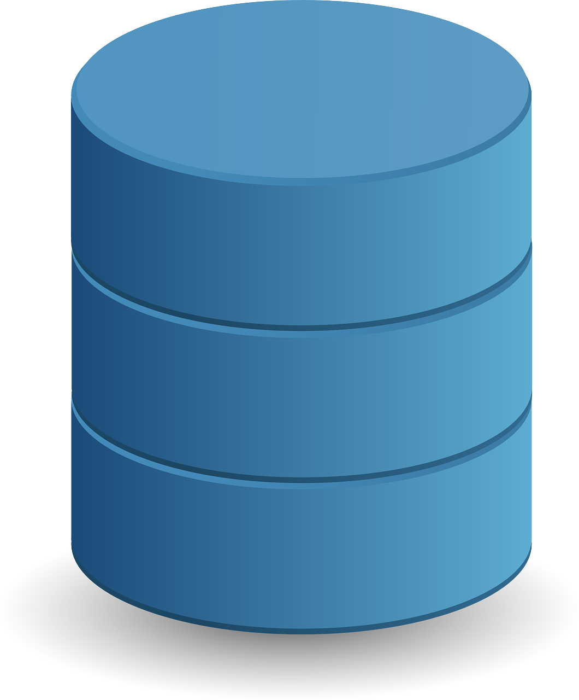
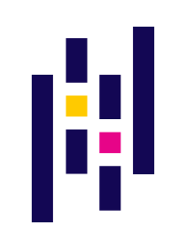

2022
Stage développeur web et web mobile à POP School
développer un site web fictif
2022
Stage développeur web et web mobile à POP School
développer un site web fictif
2015-2017
Lycée horticole de raismes
CAPA Jardinier Paysagiste
juin-aout 2022
Les atelier numérique Simplon
Médiateur Numérique
septembre-novembre 2022
Efficience Simplon
Tech IA
Langage de programmation

Python
SQlite, MongoDB

Falsk
Pandas

Matplotlib

Scikit

Streamlit

HTML 5

CSS 3

Visual Studion Code

Git

Github

Canva

Figma